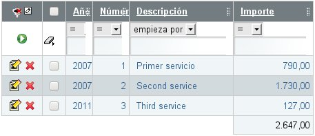
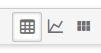

Table of Contents
Capítulo 4: Datos tabulares XML (clásico)
Datos tabulares son aquellos que se visualizan en formato de tabla. Cuando creamos un módulo de OpenXava convencional el usuario puede gestionar la información sobre ese componente con una lista como ésta:
Esta lista permite al usuario:
- Filtrar por cualquier columna o combinación de ellas.
- Ordenar por cualquier columna con un simple click.
- Visualizar los datos paginados, y así podemos leer eficientemente tablas de millones de registros.
- Personalizar la lista: añadir, quitar y cambiar de orden las columnas (con el lapicito que hay en la parte superior izquierdas). Las personalizaciones se recuerdan por cada usuario.
- Acciones genéricas para procesar la lista: Como la de generar un informe en PDF, exportar a Excel o borrar los registros seleccionados.
La sintaxis de tab es:
<tab nombre="nombre" <!-- 1 --> editor="editor" <!-- 2 Nuevo en v4.6 --> editores="editores" <!-- 3 Nuevo en v5.7 --> > <filtro ... /> <!-- 4 --> <estilo-fila ... /> ... <!-- 5 --> <propiedades ... /> <!-- 6 --> <condicion-base ... /> <!-- 7 --> <orden-defecto ... /> <!-- 8 --> </tab>
- nombre (opcional): Podemos definir varios tabs para un componente, y ponerle un nombre a cada uno. Este nombre se usará después para indicar que tab queremos usar (normalmente en aplicación.xml al definir un módulo).
- editor (opcional): (Nuevo en v4.6) Editor de default-editors.xml o editores.xml usado para visualizar la lista. Se usa para el formato por defecto, si la lista tiene varios formatos los otros permanecen inalterados.
- editores (opcional): (Nuevo en v5.7) Lista de editores separados por coma usados para visualizar la lista. Cada editor corresponde a un formato disponible para los usuarios. Los editores se declaran en default-editors.xml o editores.xml.
- filtro (uno, opcional): Permite definir programáticamente un filtro a realizar sobre los valores que introduce el usuario cuando quiere filtrar.
- estilo-fila (varios, opcional): Una forma sencilla de especificar una estilo de visualización diferente para ciertas filas. Normalmente para resaltar filas que cumplen cierta condición.
- propiedades (uno, opcional): La lista de propiedades a visualizar inicialmente. Pueden ser calificadas. El sufijo + (nuevo en v4.1) se puede añadir a una propiedad para mostrar la suma de la columna abajo.
- condicion-base (una, opcional): Es una condición que aplicará siempre a los datos visualizados añadiendose a las que pueda poner el usuario.
- orden-defecto (uno, opcional): Para especificar el orden en que aparece los datos en la lista inicialmente.
Propiedades iniciales y resaltar filas
La personalización más simple es indicar las propiedades a visualizar inicialmente:<tab> <estilo-fila estilo="row-highlight" propiedad="tipo" valor="fijo"/> <propiedades> nombre, tipo, comercial.nombre, direccion.municipio, comercial.nivel.descripcion </propiedades> </tab>Vemos como podemos poner propiedades calificadas (que pertenecen a referencias) hasta cualquier nivel. Estas serán las propiedades que salen la primera vez que se ejecuta el módulo, después cada usuario puede escoger cambiar las propiedades que quiere ver.
En este caso vemos también como se indica un <estilo-fila/>; estamos diciendo que aquellos objetos cuya propiedad tipo tenga el valor fijo han de usar el estilo row-highlight. El estilo ha de definirse en la hoja de estilos CSS. El estilo row-highlight (highlight en versiones anteriores a v4m3) ya viene predefinido con OpenXava, pero se pueden añadir más. El resultado visual del anterior tab es:

Filtros y condición base
Una técnica habitual es combinar un filtro con una condición base:<tab nombre="Actuales"> <filtro clase="org.openxava.test.filtros.FiltroAñoActual"/> <propiedades> año, numero, sumaImportes, iva, cantidadLineas, pagada, cliente.nombre </propiedades> <condicion-base>${año} = ?</condicion-base> </tab>La condición tiene la sintaxis SQL, ponemos ? para los argumentos y los nombres de propiedades entre ${}. En este caso usamos el filtro para dar valor al argumento. El código del filtro es:
package org.openxava.test.filtros; import java.util.*; import org.openxava.filters.*; /** * @author Javier Paniza */ public class FiltroAñoActual implements IFilter { // 1 public Object filter(Object o) throws FilterException { // 2 Calendar cal = Calendar.getInstance(); cal.setTime(new java.util.Date()); Integer año = new Integer(cal.get(Calendar.YEAR)); Object [] r = null; if (o == null) { // 3 r = new Object[1]; r[0] = año; } else if (o instanceof Object []) { // 4 Object [] a = (Object []) o; r = new Object[a.length + 1]; r[0] = año; for (int i = 0; i < a.length; i++) { r[i+1]=a[i]; } } else { // 5 r = new Object[2]; r[0] = año; r[1] = o; } return r; } }Un filtro recoge los argumentos que el usuario teclea para filtrar la lista y los procesa devolviendo lo que al final se envía a OpenXava para que haga la consulta. Como se ve ha de implementar IFilter (1) lo que lo obliga a tener un método llamado filter (2) que recibe un objeto que el valor de los argumentos y devuelve los argumentos que al final serán usados. Estos argumentos pueden ser nulo (3), si el usuario no ha metidos valores, un objeto simple (5), si el usuario a introducido solo un valor o un array de objetos (4), si el usuario a introducidos varios valores. El filtro ha de contemplar bien todos los casos. En el ejemplo lo que hacemos es añadir delante el año actual, y así se usa como argumento a la condición que hemos puesto en nuestro tab.
Resumiendo el tab que vemos arriba solo sacará las facturas correspondientes al año actual.
Podemos ver otro caso:
<tab nombre="AñoDefecto"> <filtro clase="org.openxava.test.filtros.FiltroAñoDefecto"/> <propiedades> año, numero, cliente.numero, cliente.nombre, sumaImportes, iva, cantidadLineas, pagada, importancia </propiedades> <condicion-base>${año} = ?</condicion-base> </tab>En este caso el filtro es:
package org.openxava.test.filtros; import java.util.*; import org.openxava.filters.*; /** * @author Javier Paniza */ public class FiltroAñoDefecto extends BaseContextFilter { // 1 public Object filter(Object o) throws FilterException { if (o == null) { return new Object [] { getAñoDefecto() }; // 2 } if (o instanceof Object []) { List c = new ArrayList(Arrays.asList((Object []) o)); c.add(0, getAñoDefecto()); // 2 return c.toArray(); } else { return new Object [] { getAñoDefecto(), o }; // 2 } } private Integer getAñoDefecto() throws FilterException { try { return getInteger("xavatest_añoDefecto"); // 3 } catch (Exception ex) { ex.printStackTrace(); throw new FilterException( "Imposible obtener año defecto asociado a esta sesión"); } } }Este filtro desciende de BaseContextFilter, esto le permite acceder al valor de los objetos de sesión de OpenXava. Vemos como usa un método getAñoDefecto() (2) que a su vez llama a getInteger() (3) el cual (al igual que getString(), getLong() o el más genérico get()) nos permite acceder al valor del objeto xavatest_añoDefecto. Esto objeto lo definimos en nuestro archivo controladores.xml de esta forma:
<objeto nombre="xavatest_añoDefecto" clase="java.lang.Integer" valor="1999"/>
Las acciones lo pueden modificar y tiene como vida la sesión del usuario y es privado para cada módulo. De esto se habla más profundamente en el capítulo sobre controladores.Esto es una buena técnica para que en modo lista aparezcan unos datos u otros según el usuario o la configuración que éste haya escogido.
También es posible acceder a variables de entorno dentro de un filtro (nuevo en v2.0) de tipo BaseContextFilter, usando el método getEnvironment(), de esta forma:
new Integer(getEnvironment().getValue("XAVATEST_AÑO_DEFECTO"));Para aprender más sobre variable de entorno ver el capítulo sobre controladores.
Select parcial (nuevo en v5.6)
En baseCondition puedes escribir la sentencia select a partir de la clausula FROM, para hacerlo empieza la condición con from con sintaxis SQL:<tab nombre="DeValencia"> <condicion-base> from XAVATEST.CLIENTE inner join XAVATEST.CLIENTE_PROVINCIA provincias1_ on XAVATEST.CLIENTE.NUMERO=provincias1_.CUSTOMER inner join XAVATEST.PROVINCIA provincia2_ on provincias1_.PROVINCIA=provincia2_.ID inner join XAVATEST.PROVINCIA T_direccion_provincia on XAVATEST.CLIENTE.PROVINCIA=T_direccion_provincia.ID where provincia2_.ID='AK' </condicion-base> </tab>Esta opción es mejor que usar un select íntegro porque la lista de propiedades la genera OpenXava, así el usuario puede personalizar la lista mientras que el desarrollador todavía tiene la opción de hacer consultas sofisticadas.
Select íntegro
Tenemos la opción de poner el select completo para obtener los datos del tab:<tab nombre="SelectIntegro"> <propiedades>codigo, descripcion, familia</propiedades> <condicion-base> select ${codigo}, ${descripcion}, XAVATEST@separator@FAMILIA.DESCRIPCION from XAVATEST@separator@SUBFAMILIA, XAVATEST@separator@FAMILIA where XAVATEST@separator@SUBFAMILIA.FAMILIA = XAVATEST@separator@FAMILIA.CODIGO </condicion-base> </tab>Esto es mejor usarlo solo en casos de extrema necesidad. No suele ser necesario, y al usarlo el usuario no podrá personalizarse la vista.
Orden por defecto
Por último, establecer un orden por defecto es harto sencillo:<tab nombre="Simple"> <propiedades>año, numero, fecha</properties> <orden-defecto>${año} desc, ${numero} desc</orden-defecto> </tab>Este orden es solo el inicial, el usuario puede escoger otro con solo pulsar la cabecera de una columna.
Valores por defecto para los tabs a nivel de aplicación (new v4m4)
Esta funcionalidad funciona en los componentes XML igual que en la entidades JPA.Sumatorio de columna (nuevo en v4.1)
Para mostrar la suma de todos los valores de una columna al final de la lista sólo has de añadir el símbolo + al nombre de la propiedad, como sigue:<tab > <properties>año, numero, descripcion, importe+</properties> </tab>En este caso se mostrará la suma de la columna importe, tal como muestra la siguiente imagen:

Sólo se puede aplicar el sumatorio a las propiedades numéricas no calculadas.
Escoger un editor (nuevo en v4.6)
Un editor es el código real (normalmente un JSP) que visualiza la lista al usuario. Por defecto, el editor que OpenXava usa para visualizar los datos tabulares es una lista con paginación, filtrado, ordenación y búsqueda, pero podemos especificar nuestro propio editor para visualizar un tab concreto usando el atributo editor en <tab/>.Por ejemplo, si tenemos una lista de entidades Cliente y queremos visualizarla usando una interfaz de usuario personalizada, como una fila de fichas, lo puedes hacer así:
<tab nombre="Fichas" editor="ListaFichasCliente"> <propiedades>codigo, nombre, tipo, direccion.ciudad, direccion.provincia.nombre</propiedades> </tab>En este caso el editor ListaFichasCliente se usará para visualizar y editar los datos tabulares, en lugar de la de por defecto. Hemos de definir nuestro editor ListaFichasCliente en el archivo xava/editors.xml de nuestro proyecto:
<editor nombre="ListaFichasCliente" url="fichasClienteListEditor.jsp"/>
También hemos de escribir el código JSP para el editor en fichasClienteListEditor.jsp.Esta característica es para cambiar el editor para un tab concreto de una entidad. Si lo que queremos es cambiar el editor para todos los tabs de cierta entidad a nivel de aplicación es mejor configurarlo usando el archivo xava/editores.xml.
Veáse la sección Editores para tabs del capítulo 9 para más detalles.
Varios formatos de presentación usando editores (nuevo en v5.7)
Los mismos datos se pueden visualizar con diferentes formatos de presentación, por ejemplo, usando listas, gráficos, tarjetas, etc. El usuario puede escoger el formato usando los botones a la derecha de la barra de botones superior:
Los formatos disponibles son todo los editores que están asignado a tab usando <for-tabs/> en default-editors.xml o <para-tabs/> en editores.xml. Sin embargo, puedes cambiar los editores disponibles para un tab específico con el atributo editors (nuevo en v5.7) de <tab/> de los componentes XML. Por ejemplo, si escribes un <tab/> como este:
<tab nombre="ConFichas" editores="List, Charts, ListaFichasCliente"> <propiedades>codigo, nombre, tipo, direccion.ciudad, direccion.provincia.nombre</propiedades> </tab>Este tab tendrá los formatos List y Charts, que son estándar, y un nuevo formato personalizado, ListaFichasClientes. ListaFichasClientes es un editor propio definido en editores.xml.
Para aprender como definir los editores para los tabs, lee la documentación sobre personalización.
Quitar los gráficos de modo lista (nuevo en v5.7)
<tab editores=/> también permite quitar los gráficos (y todos los demás formatos) del modo lista, de esta manera:<tab nombre="SoloLista" editores="List"> <propiedades>codigo, nombre, tipo, direccion.ciudad, direccion.provincia.nombre</propiedades> </tab>Así podemos tener un módulo sin gráficos, sólo la lista de OpenXava de toda la vida. Dado que hay solo un editor, los botones para seleccionar formato no aparecen.
La diferencia entre editor y editors, es que con editor indicamos el editor para el formato por defecto, mientras que con editors especificamos todos los formatos disponibles.